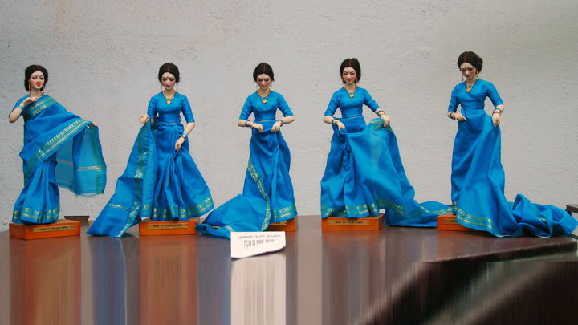
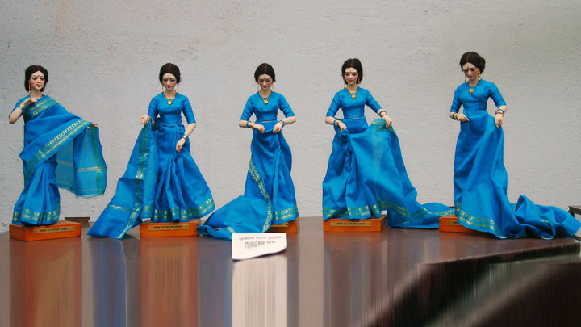

If the hustle and bustle of Ernakulam gets to you, walk over to a neatly placed behemoth in Edappally.
You are greeted at the entrance by the Sage Parsurama, the man who is said to have carved out present
day Kerala. The silence is striking in itself but the exhibits take you on a singular odyssey through the
annals of Kerala's history. The location is none other than the magnificent Madhavan Nayar Foundation or
Museum of Kerala History.
The way it has been designed immediately captures your attention. Onstepping in, you witness historic
episodes from the Neolithic to the Modern era through life-size figures. There is a wonderful gallery
that displays paintings and sculptures that include over 200 original works by contemporary Indian
artists. The sound and light shows in both English and Malayalam make for a riveting experience.
It is a visual spectacle, chronicling the past, which is a must-visit destination for all who
are interested in the glorious history of God’s Own Country.
Visiting Hours: 10:00 - 17:00 hours on all days except Mondays.
Pathadipalam
Edappally, Kochi - 682024
Tel : +91 484 2541768, 4020506,4020509
Mob: +91 8129051880
Email : mnfoundationkochi@gmail.com
Getting there
Nearest railway station: Ernakulam, about 11 km
Nearest airport: Cochin International Airport, about 21 km